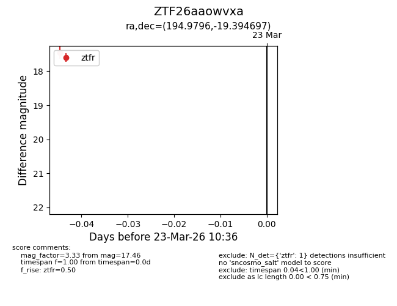
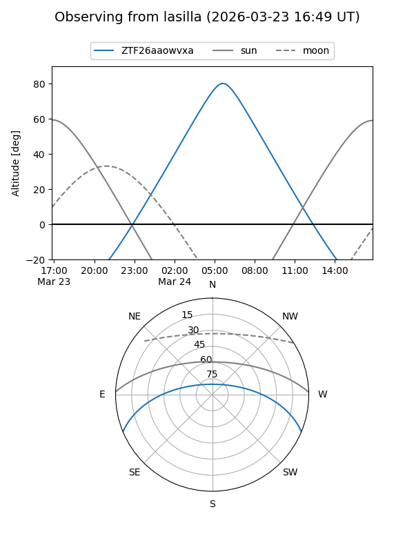
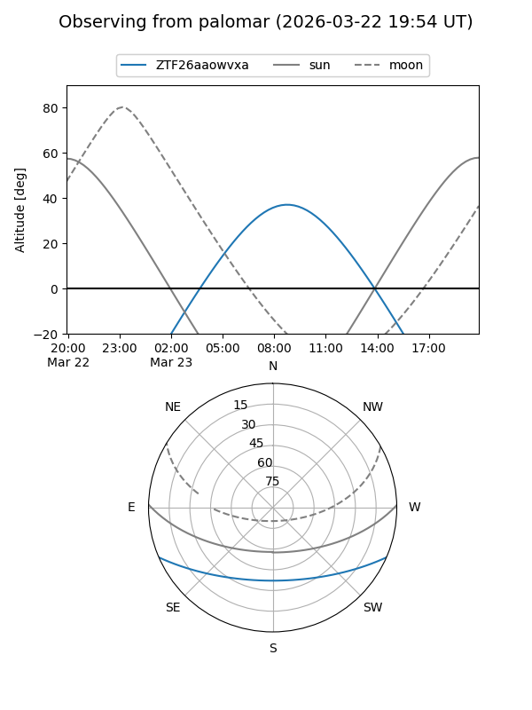

ZTF26aaowvxa
Target ZTF26aaowvxa at 2026-03-23 10:38
Aliases and brokers:
FINK: link
Lasair: link
ALeRCE: link
alt names
ZTF26aaowvxa (ztf,fink_ztf)
Coordinates:
equatorial (ra, dec) = 194.9796,-19.39470
equatorial (HMS+DMS) = 12:59:55.11,-19:23:40.91
galactic (l, b) = (305.6862,+43.43169)
Flags:
Photometry:
last ztfr=17.46
1 ztfr detections
Lightcurve

Visibility


Additional plots